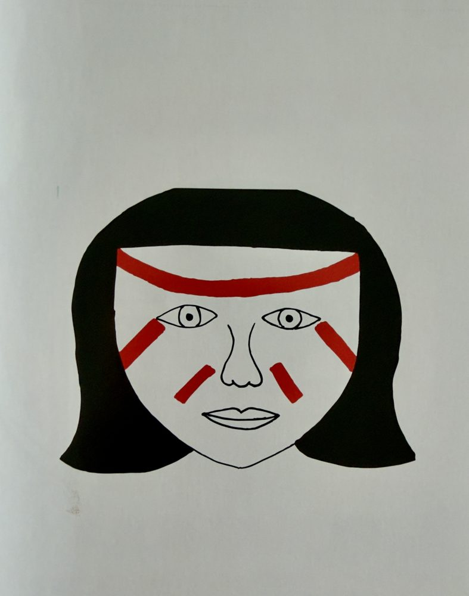
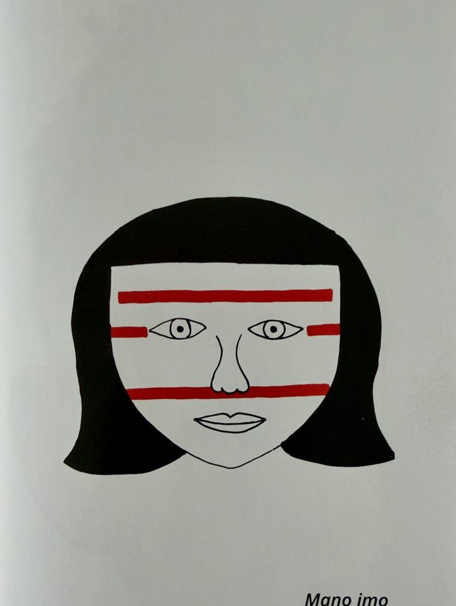
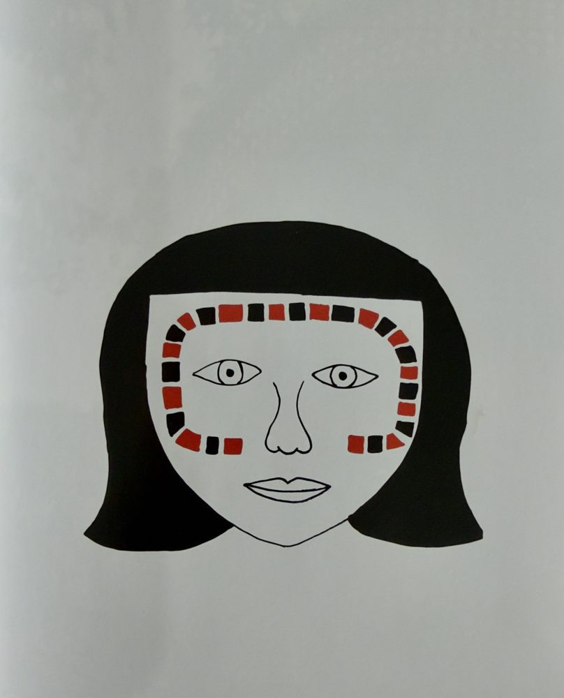
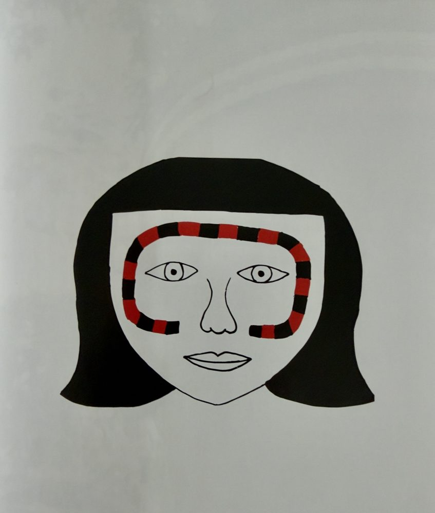
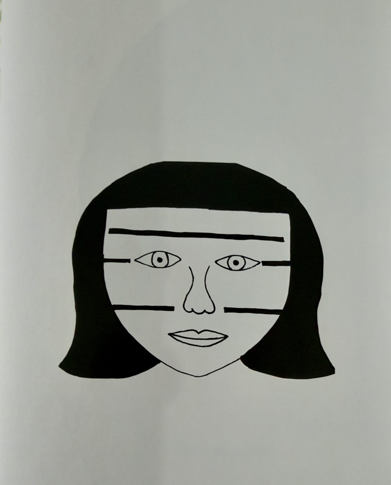
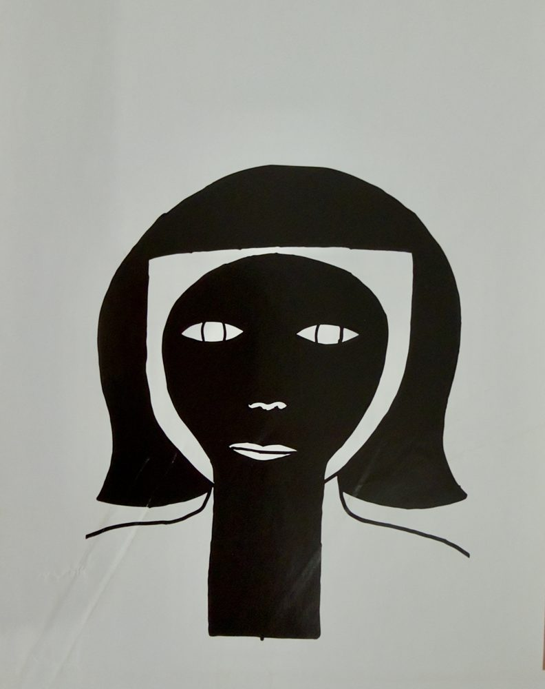

Encyclopedia
Pinturas faciais: Aroroe
Pinturas faciais (boe ejiwu) do clã Aroroe, metade Tugarege: 12 registros.
Pinturas faciais do clã Aroroe, metade Tugarege. Descrições marcadas como pendentes foram omitidas; os dados aguardam validação pela comunidade.
- Nabure Jokuria — Representa o olho da araracanga (arara-vermelha).
- Aije Imo Corewu — Representa a ornamentação do Aije.
- Aije Imo Kujagurewu — Representa a ornamentação do Aije.
- Mano Imo — Representa um gavião pequeno (espécie a identificar).
- Nonogo Pega
- Kidoguro Pega — Representa o queixada.
- Bakororewu Atugo — Representa um tipo de cobra-coral.
- Aroredo Imo Kidoguro Kurirewu
- Arori Atugo — Representa um tipo de cobra-coral.
- Korao Imo — Representa uma espécie de papagaio.
- Kidoguro Kurirewu
- Meridabo Je Co — Representa a raposa.
Pictures
 Aije Imo Corewu. Photo: Boe Ejerare (LanguageStructure/boe-ejerare)
Aije Imo Corewu. Photo: Boe Ejerare (LanguageStructure/boe-ejerare)
Aije Imo Kujagurewu. Photo: Boe Ejerare (LanguageStructure/boe-ejerare)
Mano Imo. Photo: Boe Ejerare (LanguageStructure/boe-ejerare) Nonogo Pega. Photo: Boe Ejerare (LanguageStructure/boe-ejerare)
Nonogo Pega. Photo: Boe Ejerare (LanguageStructure/boe-ejerare) Kidoguro Pega. Photo: Boe Ejerare (LanguageStructure/boe-ejerare)
Kidoguro Pega. Photo: Boe Ejerare (LanguageStructure/boe-ejerare)
Bakororewu Atugo. Photo: Boe Ejerare (LanguageStructure/boe-ejerare) Aroredo Imo Kidoguro Kurirewu. Photo: Boe Ejerare (LanguageStructure/boe-ejerare)
Aroredo Imo Kidoguro Kurirewu. Photo: Boe Ejerare (LanguageStructure/boe-ejerare)
Arori Atugo. Photo: Boe Ejerare (LanguageStructure/boe-ejerare)
Korao Imo. Photo: Boe Ejerare (LanguageStructure/boe-ejerare) Kidoguro Kurirewu. Photo: Boe Ejerare (LanguageStructure/boe-ejerare)
Kidoguro Kurirewu. Photo: Boe Ejerare (LanguageStructure/boe-ejerare)
Meridabo Je Co. Photo: Boe Ejerare (LanguageStructure/boe-ejerare)
How to cite
Pinturas faciais: Aroroe. In: Boe Eno Moto, Encyclopedia (2026-10-09). https://boeenomoto.terradoc.org/en/encyclopedia/pinturas-aroroe.html
Updated 2026-10-09